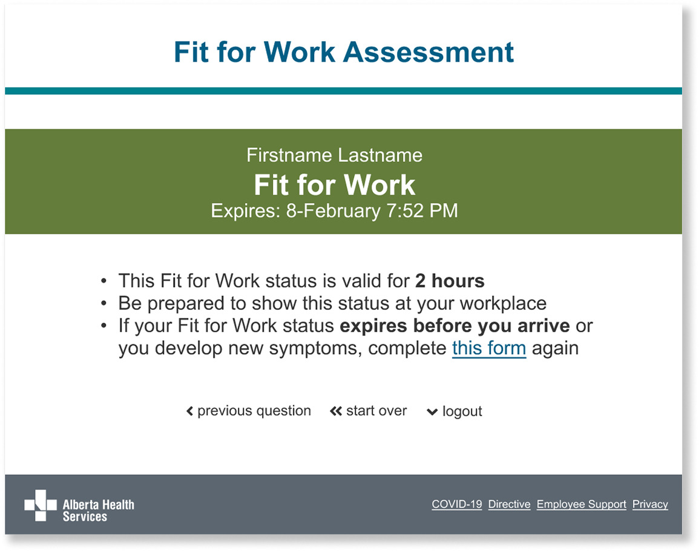
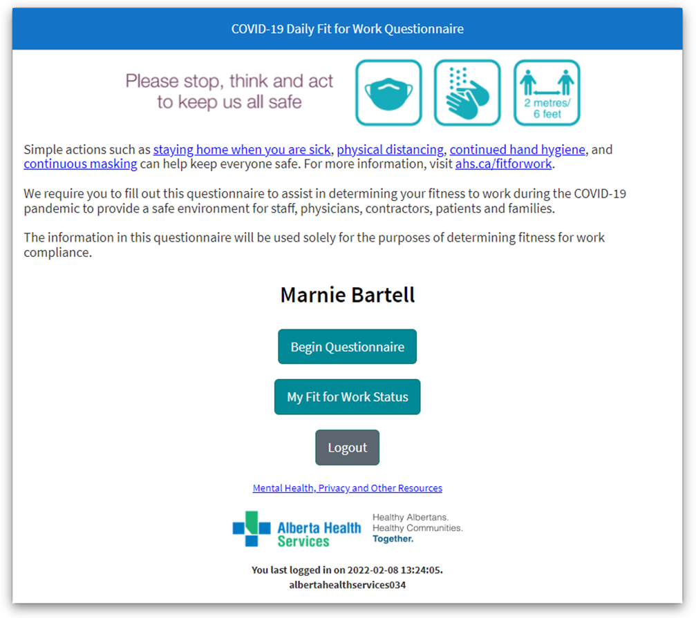
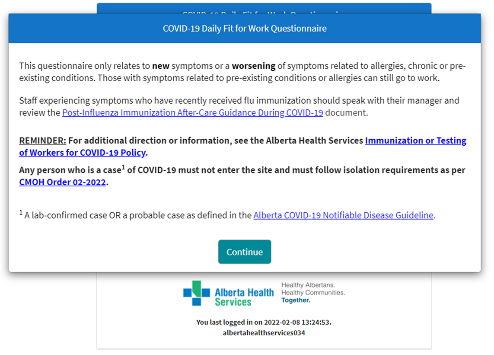
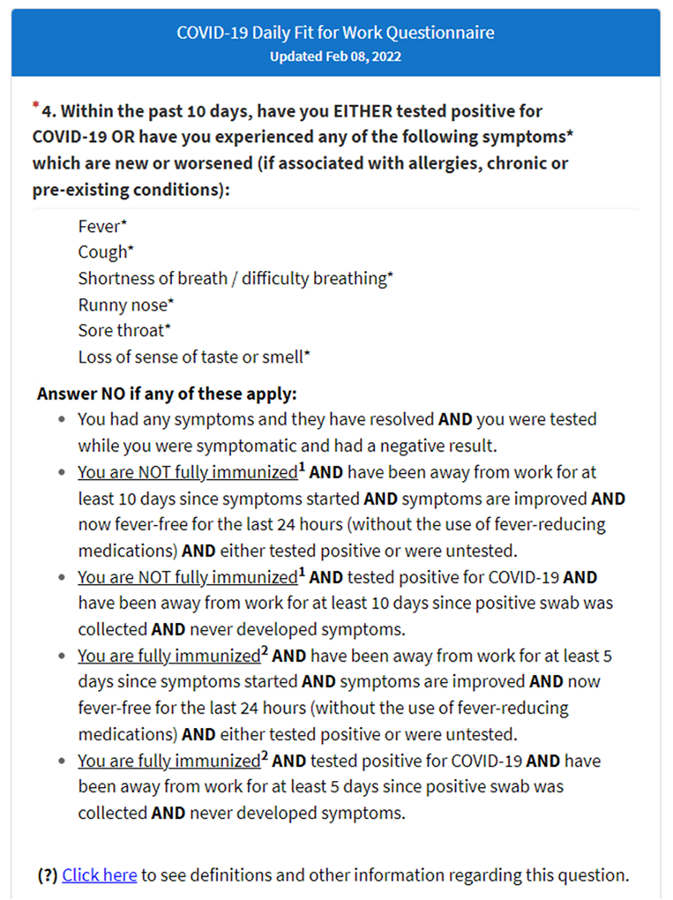
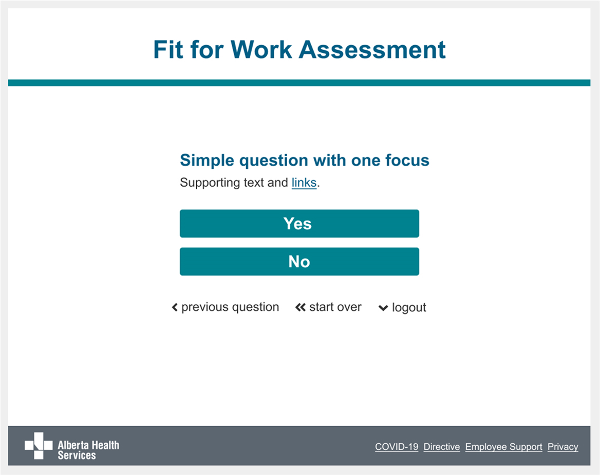
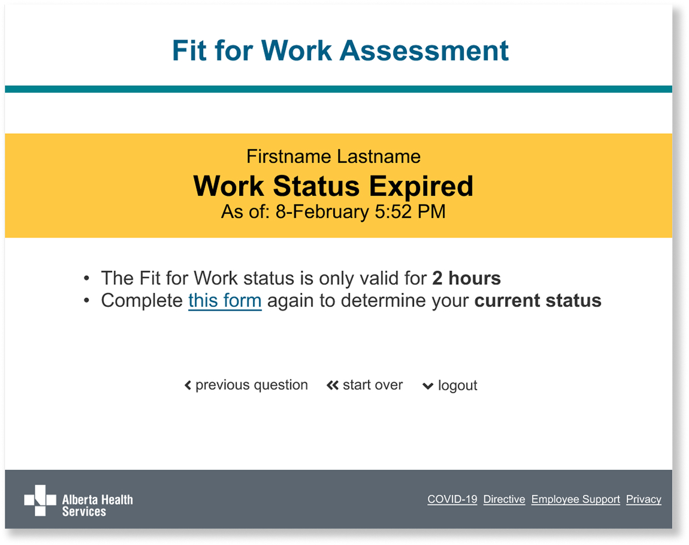
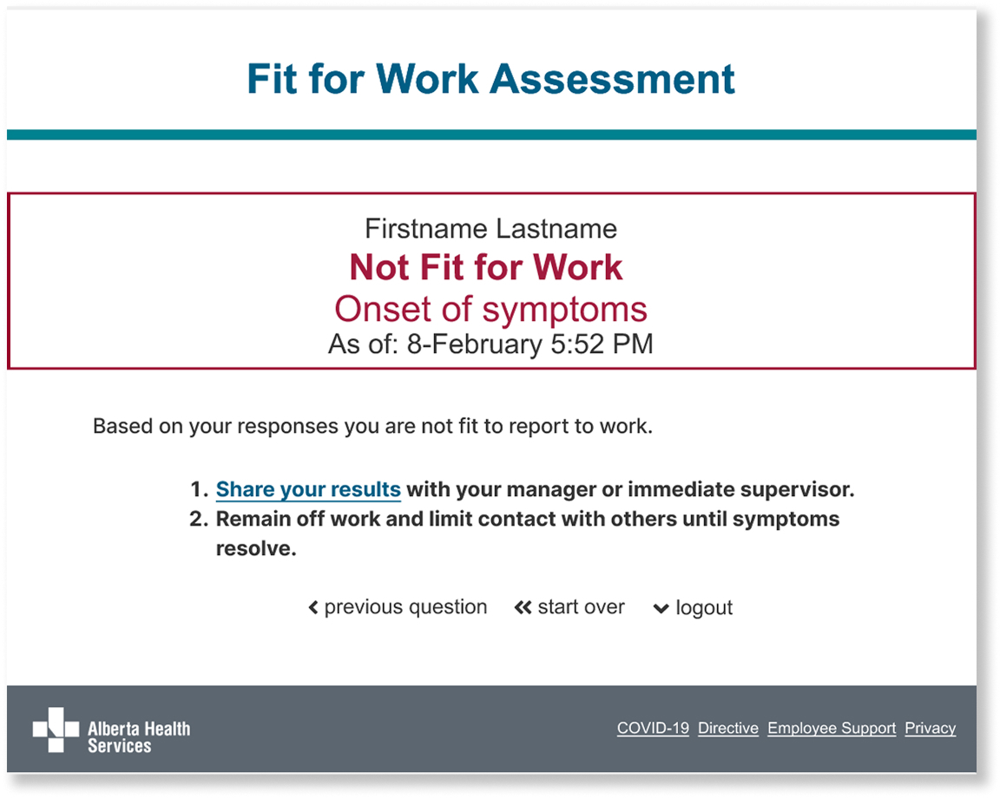

Fit for Work
Heuristic evaluation and redesign
Summary
I was tasked with evaluating our Fit for Work tool for potential improvements and using UX industry best practices to guide recommendations and mockups.

Background
My role
UX researcher responsible for conducting a usability heuristic evaluation to identify improvements, and then designing subsequent lo-fi and hi-fi mockups to demonstrate solutions.
Goal
Improve current tool for users to make it easier to use
Target users
Front-line workers who had to check-in daily during the COVID pandemic
Pain points
During the pandemic, this tool kept evolving as the guidance for attending work kept changing. Because of this, the tool kept getting more complex understandably.
By objectively evaluating the tool against well-known and proven psychology-based heuristic guidelines, numerous opportunities to improve the process for users became apparent.
Research
I conducted a heuristic evaluation, which is a method for identifying user interface issues by judging against guidelines/heuristics (source: UX Heuristics).
These factors seemed particulary relevant:
- People get easily distracted
- People lose interest when there is too much information
- People cannot multitask well
- People make mistakes
Results and recommendations
Simplify the current tool that features complicated information, which is difficult to process and interact with, by:
- Limiting each screen to one question (instead of presenting complex, nested questions)
- Using less colours and more white space
- Standardizing font size, style, and contrast
- Reducing and consolidating external links
- Reducing unnecessary information
- Streamlining design elements to provide consistency
- Adding navigation between screens
- Providing a clear hierarchy between important and secondary information
Before and after
Before

The buttons tended to compete with each other and there wasn't a single call to action.

Users were confused by featured pop-ups with a lot of additional information and links.

Despite using bullets and bolding, the factors were very complicated and difficult to scan. Some words are underlined that are not links, which is confusing on the web.
After

To keep users from getting distracted, I suggested asking one question at a time and removing nested questions.
Also, I shortened the title and added a clear hierarchy of information. I reduced and consolidated links and replaced "click here" with linked words and phrases.
A user will see a green banner if they are good to go to work that day. Further instructions are clearly listed if the user needs more information.

If a user's fitness assessment times out, they will see a yellow banner.

If they are deemed unable to attend work, users will see a red outlined banner with rationale why and further instructions.
To ensure that there is enough contrast, the new colours are adjusted from the print-based branding colours.
Results and outcomes
Learnings
- I learned that simplifying elements can have a huge impact.
- While we don't plan on creating complicated designs, this can happen easily when factors and policies change quickly.
- Stepping back and re-evaluating pages using known heuristics can produce very successful results.